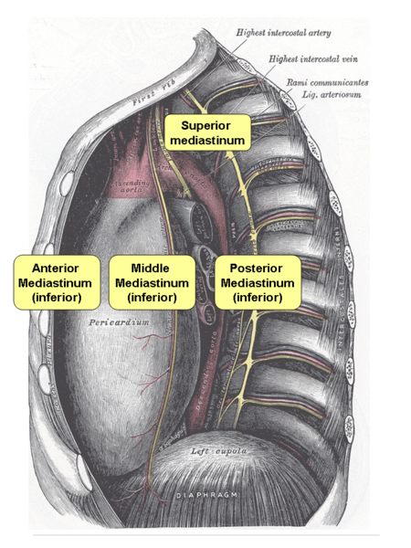

The mediastinum is located in the center of the chest between the two lungs and holds many vital organs of the body including the heart, the trachea, and the esophagus.
This website was built in April 2020 during the COVID pandemic in an attempt to give accurate information about the pandemic. Its goal later morphed into providing a simplified understanding of various interesting and often misunderstood topics.
This website aims to remain apolitical.
The site has two branches: Health and Takes. The "Health" branch provides simplified information of topics in healthcare. The "Takes" branch, short for "Quick Takes," includes more editorial-style pieces around a variety of subjects.
This website does not attempt to treat or prescribe. It is not a replacement or a substititon for the advice and counsel of your personal physician.